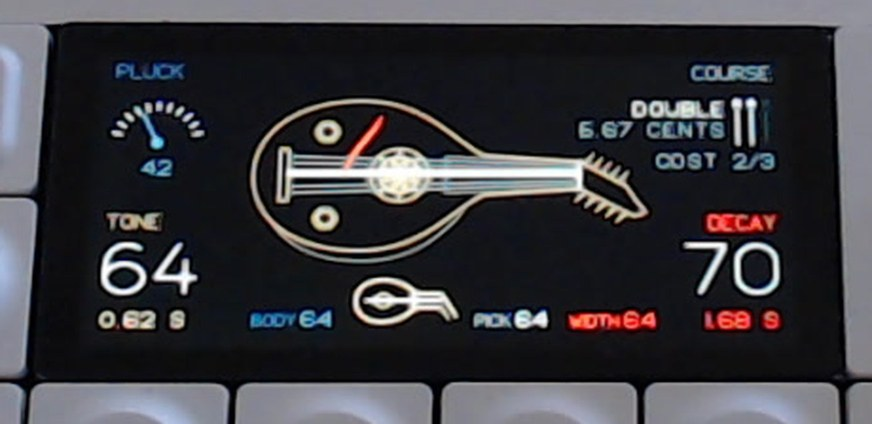

Add-ons for the OP-1 Field on OS 1.7.3 with open-field. Each pack is one file; its repository holds the source, a guide, and what was tried on a unit.
To put one on a unit: tick it on open-field's install page once it is listed there, or copy the pack file into the unit's packs folder in disk mode and restart.
oud
synth engine · version 6

Oud's page: a double course, photographed on the unit
Plucked strings in courses: oud, saz, qanun, kora, harp, bouzouki and lute, with eight sounds and a drawn page.
A taqsim in rastSolo oud in free time; the tuning pack on maqam / rast
The eight soundsOne phrase on oud, oud dark, lute, kora, harp, bouzouki, saz and qanun
Three parts in hijazOud dark, harp and bouzouki, played one at a time and layered
The recordings were played over MIDI by a script and recorded from the unit's own USB audio; only the level was changed. The pictures are photos of the unit's screen.
Unofficial; not made, endorsed or supported by Teenage Engineering. MIT licence. This page's repository.